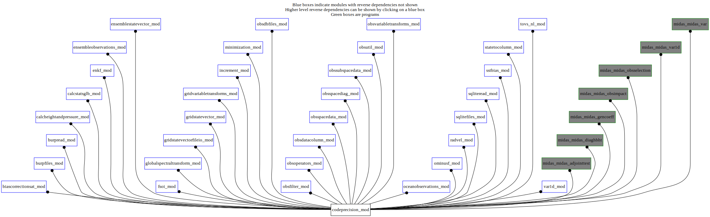

Dependency Diagrams:
No Direct Dependency
 Reverse Dependency Diagram¶
Description
MODULE codePrecision_mod (prefix=’pre’ category=’8. Low-level utilities and constants’)
- Purpose
A module to specify the precision, mostly for floating point variables
Quick access
- Variables
pre_incrreal,pre_obsmpireal,pre_obsreal,pre_spectransmpireal,pre_spectransmpitype,pre_spectransreal- Routines
Needed modules
mpiVariables
- codeprecision_mod/pre_incrreal [integer,public/parameter]¶
- codeprecision_mod/pre_obsmpireal [character,public]¶
- codeprecision_mod/pre_obsreal [integer,public/parameter]¶
- codeprecision_mod/pre_spectransmpireal [character,public]¶
- codeprecision_mod/pre_spectransmpitype [integer,public/parameter]¶
- codeprecision_mod/pre_spectransreal [integer,public/parameter]¶
Subroutines and functions
- subroutine codeprecision_mod/pre_printprecisions()¶
- Purpose
To print precision parameters in the listing.
- Called from
csg_setup(),omf_ominusf(),omf_ominusfens(),midas_adjointtest,midas_diaghbht,midas_gencoeff,midas_obsimpact,midas_obsselection,midas_var
{kind=link}